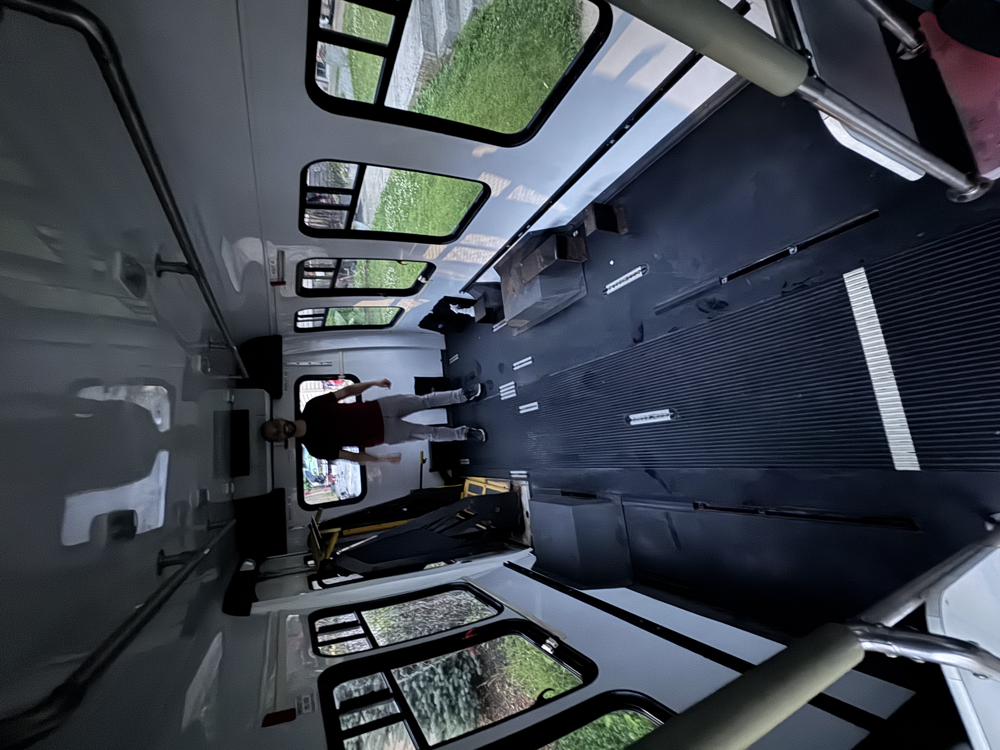
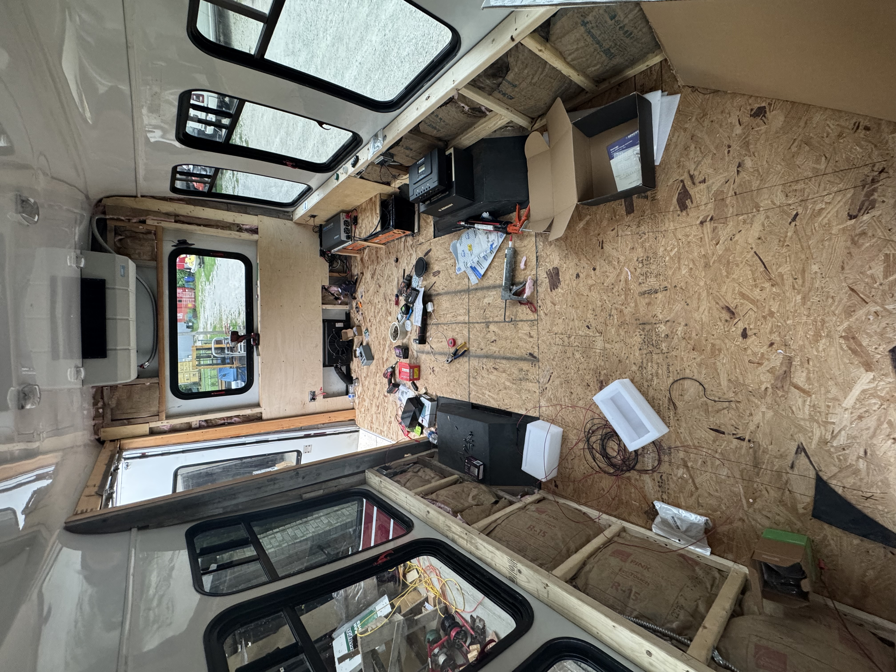
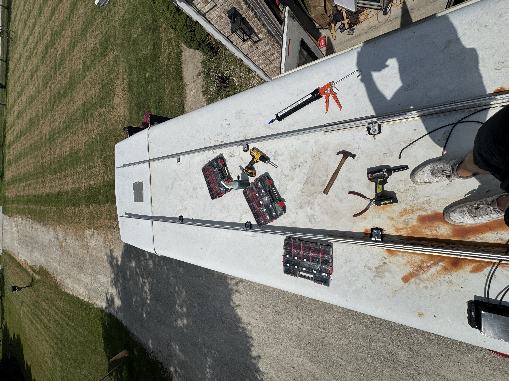
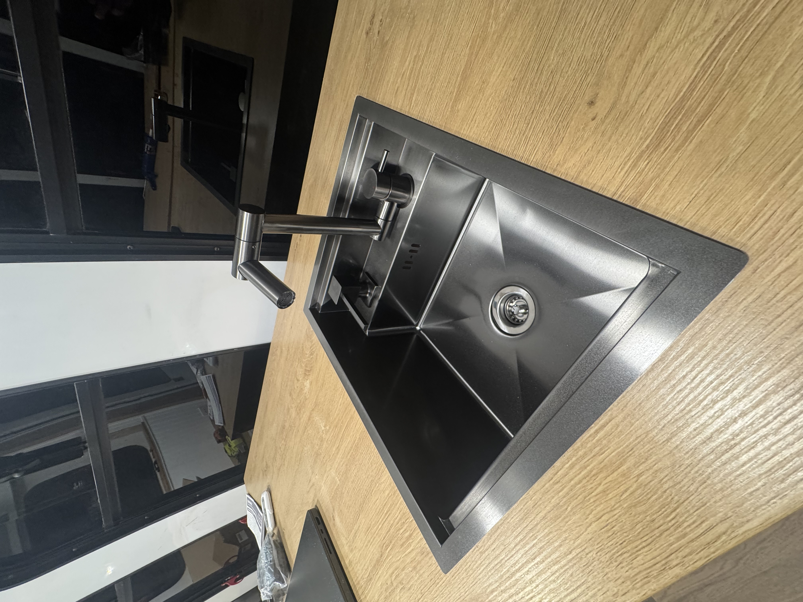
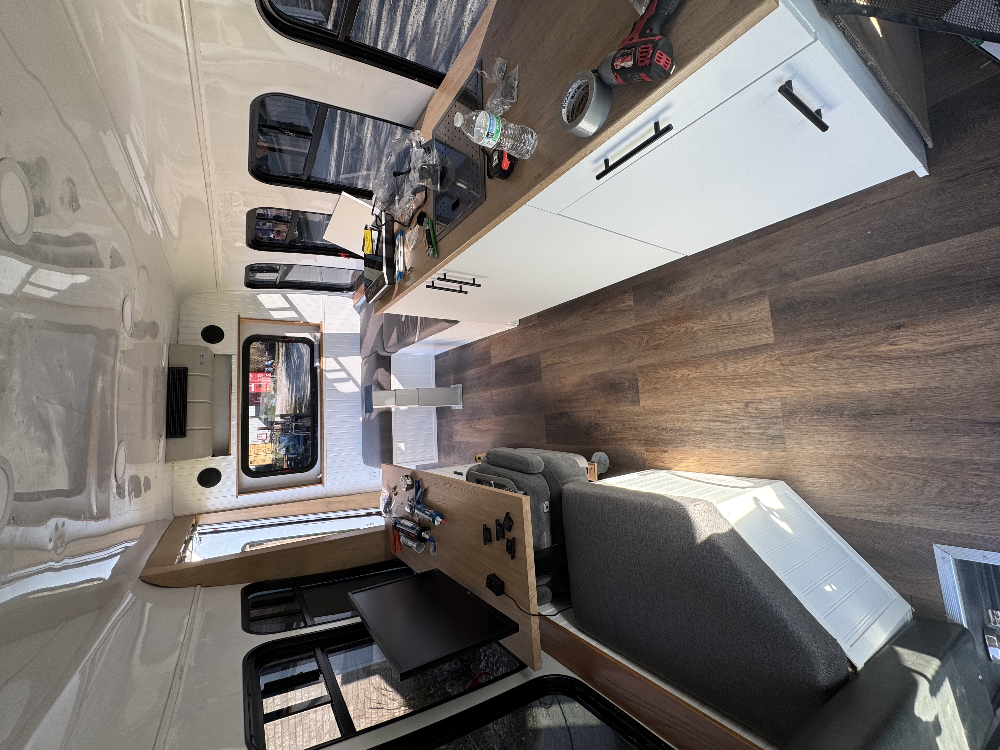
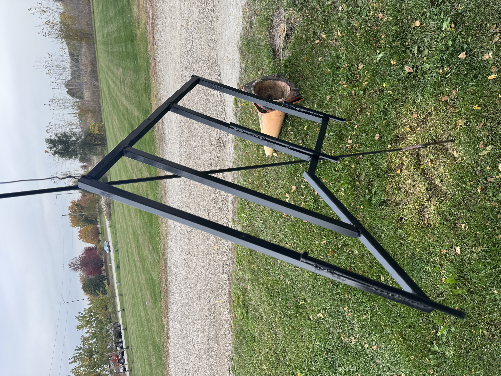

Vehicle Systems & Fabrication | Personal Project
Ford E-350 Camper Conversion
In five months, I converted a Ford E-350 shuttle bus from an empty passenger vehicle into a self-contained camper. The work combined teardown, vehicle maintenance, framing, insulation, solar and battery integration, interior systems, cabinetry, upholstery, and a custom dinette that converts into a bed.
V1 was completed on November 6, 2026. The result is a compact living space with a galley, sink and water system, induction-ready countertop, refrigerator bay, work area, upholstered seating, and a purpose-built power system—all designed and installed around the bus's original structure.
Systems integration
The electrical work started before the finish surfaces went in: conduit, outlet boxes, solar wiring, shore power, battery monitoring, a Renogy inverter, and a DC-DC charger were planned into the framing. The solar array was mounted to roof rails and connected to the charging system before the interior was closed up.
- Two 200 Ah LiFePO4 batteries configured as a 400 Ah house bank
- Renogy 3,000 W pure-sine inverter and 60 A MPPT solar charge controller
- 400 W of solar panels, roof-mounted rails, shore-power inlet, and battery monitoring
- DC-DC charging path, 12 V can lights, dedicated fridge, water-pump, and accessory circuits
Interior and furniture
The interior was framed, insulated, paneled, trimmed, and finished around a narrow but functional circulation path. I built the L-shaped seating, upholstered the base and backrest sections, installed cabinetry and a sink, and created a standing desk/work area with a fluted drawer.
- Vinyl flooring, insulated walls, white paneling, trim, and wood-veneer rear columns
- Kitchen cabinet, sink, 12 V pump, drain valve, fridge drawer, and induction-cooktop testing
- Custom benches with upholstered cushions and a convertible dining/sleeping layout
- Welded steel table frame, sliding bed extension, and hinged support legs
Build progression
From passenger shuttle to livable V1 camper.
The dated activity log and photo metadata make the conversion traceable from the original interior through structural work, power integration, finish carpentry, and the completed V1 layout.
June–July 2026
Teardown and preparation
Picked up the bus, verified base systems, removed the wheelchair lift, handrails, brackets, and legacy hardware, repaired penetrations, refreshed lighting, and prepared the shell for conversion.
Late July–August
Structure, insulation, and power
Built the floor and wall framing, routed conduit and wiring, installed shore power, insulated and paneled the walls, laid flooring, and installed the roof-mounted solar system.
August–September
Cabinetry and interior systems
Constructed seating, cabinetry, desk components, trim, window tint, sink plumbing, refrigerator storage, switching, and the 12 V water system.
October–November
Convertible living space
Completed upholstery, built and finished the welded dinette-to-bed system, installed its support legs, and declared V1 complete on November 6.






Cost breakdown
The source cost log records $10,906.01 in total spending, including the vehicle purchase. The categories below use the total-with-tax-and-fees field in the original workbook.
- Vehicle purchase
- $4,000.00
- Electrical / solar
- $2,329.05
- Furniture / appliances
- $2,095.44
- Vehicle maintenance
- $928.10
- Interior finishes
- $845.62
- General construction + framing
- $707.81
V1, deliberately scoped
V1 marks a complete, functional base conversion—not the end of the project. The core power, water, galley, seating, sleep conversion, and interior finish systems are installed and working. Future work can build on that platform without redoing the foundational infrastructure.
The original workbook, item-level cost log, activity record, and complete dated photo archive remain with the project source assets for future revisions.
Download the original build logComplete photo archive
Every documented build and V1 photo, without aggressive cropping.
Switch between the 50 build-progress photos and 31 finished V1 photos. The viewer preserves the full image within the frame, and the thumbnail strip provides direct access to every photo.